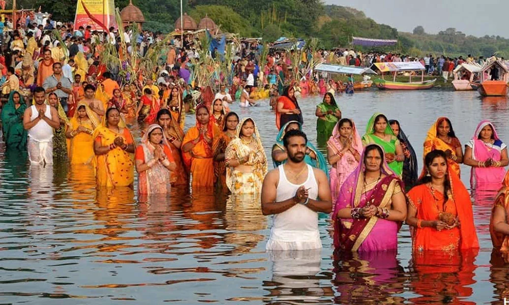

留学コラム · ネパール
一生に一度は体験したい！
ネパールの心に触れる伝統行事12選
エベレストやヒマラヤの絶景で知られるネパール。しかし、この国の本当の魅力は、人々の温かさと、何百年も受け継がれてきた伝統文化にあります。ネパールでは一年を通して数多くのお祭りが開催され、街全体が色鮮やかな装飾や音楽、笑顔で包まれます。もし旅行の日程を祭りに合わせることができたなら、それは一生忘れられない思い出になるでしょう。

1. ダサイン（Dashain）・ティハール（Tihar）
開催時期：9月下旬～11月上旬（ネパール暦により毎年変動）
ネパール最大のお祭りです。日本のお正月のように家族が故郷へ帰り、長寿や健康を願って祝福を受けます。ダサイン終了後に始まるティハールでは、家や街が無数の灯りで彩られます。犬・牛・カラスなど動物に感謝を捧げる珍しい文化もあり、夜には子どもたちが歌を歌いながら家々を訪れる幻想的な風景が広がります。
2. ブッダ・ジャヤンティ（Buddha Jayanti）
開催時期：4月～5月（満月の日）
お釈迦様の誕生日を祝う大切な祭日です。ネパールは仏教の開祖・お釈迦様が誕生した国として知られています。この日は寺院で読経が行われ、世界中から巡礼者が訪れ、神聖で穏やかな雰囲気に包まれます。
3. ガイ・ジャトラ（Gai Jatra）
開催時期：8月～9月
亡くなった家族を笑顔で偲ぶ伝統行事です。仮装行列や伝統芸能、ユーモアあふれるパフォーマンスが街を練り歩き、「悲しみだけではなく笑顔で故人を送り出そう」というネパールならではの文化を感じられます。
4. ジャナイ・プルニマ（Janai Purnima／Rakshya Bandhan）
開催時期：8月（満月の日）
健康や幸運を願い、僧侶から神聖な糸を手首に結んでもらう行事です。家族や大切な人との絆を再確認する日として、多くの人々に親しまれています。
5. ティージ（Teej）
開催時期：8月～9月
女性たちが赤い民族衣装を身にまとい、歌や踊りで家族の幸せや夫婦円満を祈る華やかなお祭りです。街中が鮮やかな赤色に染まり、ネパールの伝統衣装の美しさを堪能できます。
6. シュリー・クリシュナ・ジャンマシュタミ（Shree Krishna Janmashtami）
開催時期：8月～9月
ヒンドゥー教の神・クリシュナの誕生日を祝う祭日です。寺院は花や灯りで美しく飾られ、多くの参拝客が祈りを捧げます。夜まで続く祈りの様子はとても幻想的です。
7. ファグン・プルニマ（Fagun Purnima／ホーリー祭）
開催時期：2月～3月
春の訪れを祝う「色の祭典」です。色鮮やかな粉や水を掛け合いながら「Happy Holi!」と声を掛け合う様子は圧巻。旅行者も気軽に参加でき、ネパールならではの一体感を味わえます。
8. マゲ・サンクランティ（Maghe Sankranti）
開催時期：1月中旬（毎年1月14日頃）
新しい季節の始まりを祝う伝統行事です。健康や長寿を願って特別な伝統料理を家族で囲み、寒い冬を元気に過ごせるよう祈ります。
9. インドラ・ジャトラ（Indrajatra）
開催時期：9月頃
首都カトマンズ最大級のお祭りです。巨大な山車が街を巡り、伝統舞踊や仮面舞踏が披露されます。歴史ある王宮広場は多くの人々でにぎわい、まるで中世の世界に迷い込んだかのような雰囲気を楽しめます。
10. マハ・シヴァラトリ（Mahashivaratri）
開催時期：2月～3月
シヴァ神を讃えるヒンドゥー教の重要な祭日です。国内外から巡礼者が集まり、一晩中祈りが捧げられます。無数のろうそくや灯火に照らされた寺院は、神秘的で幻想的な光景を見せてくれます。
11. ヨマリ・プンヒ（Yomari Punhi）
開催時期：11月～12月頃（満月の日・暦により毎年変動）
カトマンズ盆地のネワール族が、米の収穫に感謝し、豊作を願う伝統行事です。この日の主役は、新米の米粉で作る蒸し菓子「ヨマリ」。家庭でヨマリを作り、神々に供えて収穫を祝うこのお祭りは、ネパールの食文化に触れる絶好の機会。蒸したてのヨマリを味わえば、冬のネパールに息づく暮らしと伝統を、より身近に感じられるでしょう。
12. チャト（Chhath）
開催時期：10月～11月（暦により毎年変動）
太陽の恵みに感謝し、家族の健康や幸せを願う伝統行事です。夕暮れには川や池のほとりに人々が集まり、果物やお菓子を供え、水に入って沈む太陽に祈りを捧げます。翌朝には、昇る太陽にも祈りを捧げるのが特徴です。自然の恵みを大切にする、ネパールの人々の信仰と暮らしに触れられるお祭りです。
お祭りを通して出会う、本当のネパール
ネパールの魅力は、美しいヒマラヤだけではありません。祭りの日には、初めて出会った旅行者にも笑顔で声をかけ、一緒に食事を楽しみ、歌い、踊り、祝福してくれる人々がいます。観光地を巡るだけでは味わえない、人とのふれあいや文化との出会いこそが、ネパール旅行の最大の魅力です。
ぜひ次の旅は、お祭りの開催時期に合わせてネパールを訪れてみてください。きっと、壮大な自然だけではない「人の温かさ」に心を打たれ、「また帰ってきたい」と思える特別な旅になるはずです。
ネパールでの滞在についてはネパール語学留学もあわせてご覧ください。実際に参加された方の体験は参加者の声からご覧いただけます。